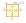
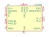
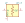
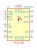
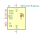
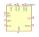
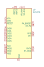
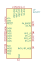
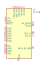

| Symbol |
Description |
0900PC15J0013 | Description: 868/915MHz Impedance Matched, Multi-Function, Integrated Ceramic Passive Component for Texas Instruments CC112x, CC117x & CC12xx Chipsets
Keys: CC1120 CC1121 CC1125 CC1175 CC1200 CC1201 balun
Datasheet: https://www.johansontechnology.com/datasheets/0900PC15J0013/0900PC15J0013.pdf |
ADC-10-1R | Description: Directional Coupler, 5 to 900 MHz, 10 dB Coupling, 50 Ohm, Mini-Circuits CD542
Keys: Directional Coupler
Datasheet: https://www.minicircuits.com/pdfs/ADC-10-1R.pdf |
ADCH-80 | Description: 50-10000MHz, RF Choke, Mini-Circuits CD542
Keys: bias filter DC choke
Datasheet: https://www.minicircuits.com/pdfs/ADCH-80+.pdf |
ADCH-80A | Description: 50-10000MHz, RF Choke, Mini-Circuits CD542
Keys: bias filter DC choke
Datasheet: https://www.minicircuits.com/pdfs/ADCH-80A+.pdf |
ADL5904 | Description: DC to 6 GHz, 45 dB TruPwr Detector with Envelope Threshold Detection, LFCSP-16
Keys: RMS power detector log decibel dB
Datasheet: https://www.analog.com/media/en/technical-documentation/data-sheets/ADL5904.pdf |
ADP-2-1W | Description: Power splitter combiner, 1 to 650 MHz, 2 way 0-degree, 50 ohm, Mini-Circuits CD636
Keys: splitter combiner
Datasheet: https://www.minicircuits.com/pdfs/ADP-2-1W.pdf |

AMK-2-13 | Description: 2x Frequency Multiplier, output 20 to 1000 MHz, 50 Ohm, Mini-Circuits CD542
Keys: frequency multiplier
Datasheet: https://www.minicircuits.com/pdfs/AMK-2-13+.pdf |
AX5043 | Description: Advanced High Performance ASK and FSK Narrow-band Transceiver for 27 - 1050 MHz Range
Keys: RF, tranceiver
Datasheet: https://www.onsemi.com/pub/Collateral/AX5043-D.PDF |
CC1000 | Description: Single Chip Low Power RF Transceiver, TSSOP-28
Keys: Low Power RF Transciever
Datasheet: www.ti.com/lit/ds/symlink/cc1000.pdf |
CC1200 | Description: Low-Power, High-Performance RF Transceiver, QFN-32
Keys: RF Tx Rx
Datasheet: http://www.ti.com/lit/ds/symlink/cc1200.pdf |

CC2500 | Description: Single Chip Low Power RF Transceiver, QFN-20
Keys: Low Power RF Transciever
Datasheet: http://www.ti.com/lit/ds/symlink/cc2500.pdf |
DC4759J5020AHF-1 | Description: 4.7-5.9GHz 20dB Directional Coupler, Configuration 1, Anaren 0805
Keys: RF coupler
Datasheet: https://cdn.anaren.com/product-documents/Xinger/DirectionalCouplers/DC4759J5020AHF/DC4759J5020AHF_DataSheet(Rev_E).pdf |
DC4759J5020AHF-2 | Description: 4.7-5.9GHz 20dB Directional Coupler, Configuration 2, Anaren 0805
Keys: RF coupler
Datasheet: https://cdn.anaren.com/product-documents/Xinger/DirectionalCouplers/DC4759J5020AHF/DC4759J5020AHF_DataSheet(Rev_E).pdf |
HMC394LP4 | Description: GaAs HBT Programmable 5-bit Counter, DC - 2.2 GHz, QFN-24-1EP
Keys: counter prescaler programmable frequency divider
Datasheet: https://www.analog.com/media/en/technical-documentation/data-sheets/hmc394.pdf |
HMC431 | Description: 5.5-6.1GHz VCO, QFN-24
Keys: vco rf
Datasheet: https://www.analog.com/media/en/technical-documentation/data-sheets/hmc431.pdf |

LAT-3 | Description: Attenuator, 3dB, 0.5W, DC to 2500 MHz, 50 Ohm, Mini-Circuits MMM168
Keys: attenuator rf
Datasheet: https://www.minicircuits.com/pdfs/LAT-3+.pdf |
LRPS-2-1 | Description: Power Splitter/Combiner, 5 to 500 MHz, 50 Ohm
Keys: power splitter combiner
Datasheet: https://www.minicircuits.com/pdfs/LRPS-2-1.pdf |
MAADSS0008 | Description: 0-2GHz, 15dB step attenuator, SOT-23-5
Keys: RF attenuator
Datasheet: http://cdn.macom.com/datasheets/maadss0008.pdf |
MAAVSS0004 | Description: DC-2GHz, 35dB, Voltage Variable Absorptive Attenuator, SOIC-14
Keys: VVA
Datasheet: https://cdn.macom.com/datasheets/MAAVSS0004.pdf |
MC12080 | Description: 1.1 GHz Prescaler, divide by 10 20 40 80, SOIC-8
Keys: prescaler frequency divider
Datasheet: https://www.onsemi.com/pub/Collateral/MC12080-D.PDF |
MC12093D | Description: /2, /4, /8, 1.1 GHz Low Power Prescaler with StandBy Mode, SOIC-8
Keys: prescaler frequency divider
Datasheet: https://www.onsemi.com/pub/Collateral/MC12093-D.PDF |
MICRF112YMM | Description: ASK/FSK Transmitter, 1.8-3.6V, 300-450MHz, +10dBm, MSOP-10
Keys: ask fsk ism transmitter
Datasheet: http://ww1.microchip.com/downloads/en/DeviceDoc/MICRF112.pdf |
MICRF220AYQS | Description: ASK Receiver 3.0-3.6V, 300-450MHz, -110dBm, QSOP-16
Keys: ask receiver
Datasheet: http://ww1.microchip.com/downloads/en/DeviceDoc/micrf220.pdf |

NRF24L01 | Description: Ultra low power 2.4GHz RF Transceiver, QFN-20
Keys: Low Power RF Transciever
Datasheet: http://www.nordicsemi.com/eng/content/download/2730/34105/file/nRF24L01_Product_Specification_v2_0.pdf |

NRF24L01_Breakout | Description: Ultra low power 2.4GHz RF Transceiver, Carrier PCB
Keys: Low Power RF Transciever breakout carrier
Datasheet: http://www.nordicsemi.com/eng/content/download/2730/34105/file/nRF24L01_Product_Specification_v2_0.pdf |
nRF24L01P | Description: nRF24L01+, Ultra low power 2.4GHz RF Transceiver, QFN20 4x4mm
Keys: Low Power RF Transciever
Datasheet: http://www.nordicsemi.com/eng/content/download/2726/34069/file/nRF24L01P_Product_Specification_1_0.pdf |
PAT1220-C-0DB | Description: 10GHz RF Attenuator, 50ohm Matched Impedance, 0dB Attenuation, PAT1220
Keys: RF attenuator
Datasheet: https://www.susumu.co.jp/common/pdf/n_catalog_partition16_en.pdf |
PAT1220-C-10DB | Description: 10GHz RF Attenuator, 50ohm Matched Impedance, 10dB Attenuation, PAT1220
Keys: RF attenuator
Datasheet: https://www.susumu.co.jp/common/pdf/n_catalog_partition16_en.pdf |
PAT1220-C-1DB | Description: 10GHz RF Attenuator, 50ohm Matched Impedance, 1dB Attenuation, PAT1220
Keys: RF attenuator
Datasheet: https://www.susumu.co.jp/common/pdf/n_catalog_partition16_en.pdf |
PAT1220-C-2DB | Description: 10GHz RF Attenuator, 50ohm Matched Impedance, 2dB Attenuation, PAT1220
Keys: RF attenuator
Datasheet: https://www.susumu.co.jp/common/pdf/n_catalog_partition16_en.pdf |
PAT1220-C-3DB | Description: 10GHz RF Attenuator, 50ohm Matched Impedance, 3dB Attenuation, PAT1220
Keys: RF attenuator
Datasheet: https://www.susumu.co.jp/common/pdf/n_catalog_partition16_en.pdf |
PAT1220-C-4DB | Description: 10GHz RF Attenuator, 50ohm Matched Impedance, 4dB Attenuation, PAT1220
Keys: RF attenuator
Datasheet: https://www.susumu.co.jp/common/pdf/n_catalog_partition16_en.pdf |
PAT1220-C-5DB | Description: 10GHz RF Attenuator, 50ohm Matched Impedance, 5dB Attenuation, PAT1220
Keys: RF attenuator
Datasheet: https://www.susumu.co.jp/common/pdf/n_catalog_partition16_en.pdf |
PAT1220-C-6DB | Description: 10GHz RF Attenuator, 50ohm Matched Impedance, 6dB Attenuation, PAT1220
Keys: RF attenuator
Datasheet: https://www.susumu.co.jp/common/pdf/n_catalog_partition16_en.pdf |
PAT1220-C-7DB | Description: 10GHz RF Attenuator, 50ohm Matched Impedance, 7dB Attenuation, PAT1220
Keys: RF attenuator
Datasheet: https://www.susumu.co.jp/common/pdf/n_catalog_partition16_en.pdf |
PAT1220-C-8DB | Description: 10GHz RF Attenuator, 50ohm Matched Impedance, 8dB Attenuation, PAT1220
Keys: RF attenuator
Datasheet: https://www.susumu.co.jp/common/pdf/n_catalog_partition16_en.pdf |
PAT1220-C-9DB | Description: 10GHz RF Attenuator, 50ohm Matched Impedance, 9dB Attenuation, PAT1220
Keys: RF attenuator
Datasheet: https://www.susumu.co.jp/common/pdf/n_catalog_partition16_en.pdf |
PD4859J5050S2HF | Description: 4.8-5.9GHz Wilkinson Power Divider, Anaren 0805
Keys: rf power divider wilkinson
Datasheet: https://cdn.anaren.com/product-documents/Xinger/PowerDividers/PD4859J5050S2HF/PD4859J5050S2HF_DataSheet(Rev_D).pdf |
RMK-3-451 | Description: 3x Frequency Multiplier, output 300 to 450 MHz, 50 Ohm, Mini-Circuits TT1224
Keys: frequency multiplier
Datasheet: https://www.minicircuits.com/pdfs/RMK-3-451+.pdf |
RMK-5-51 | Description: 5x Frequency Multiplier, Output 37.5 to 52.5 MHz, 50 Ohm, Mini-Circuits TT1224
Keys: frequency multiplier
Datasheet: https://www.minicircuits.com/pdfs/RMK-5-51+.pdf |

SE5004L | Description: 5 GHz, 26dBm Power Amplifier with Power Detector, QFN-20
Keys: RF Power Amplifier
Datasheet: https://www.skyworksinc.com/-/media/SkyWorks/Documents/Products/601-700/SE5004L_202393B.pdf |
Si4460 | Description: High-Performance, Low-Current Sub-GHz Transceiver, +13dBm, Major bands 142-1050 MHz, QFN-20
Keys: transceiver sub-ghz radio ism
Datasheet: https://www.silabs.com/documents/public/data-sheets/Si4464-63-61-60.pdf |
Si4461 | Description: High-Performance, Low-Current Sub-GHz Transceiver, +16dBm, Major bands 142-1050 MHz, QFN-20
Keys: transceiver sub-ghz radio ism
Datasheet: https://www.silabs.com/documents/public/data-sheets/Si4464-63-61-60.pdf |
Si4463 | Description: High-Performance, Low-Current Sub-GHz Transceiver, +20dBm, Major bands 142-1050 MHz, QFN-20
Keys: transceiver sub-ghz radio ism
Datasheet: https://www.silabs.com/documents/public/data-sheets/Si4464-63-61-60.pdf |
Si4464 | Description: High-Performance, Low-Current Sub-GHz Transceiver, +20dBm, Banded 119-960 MHz, QFN-20
Keys: transceiver sub-ghz radio ism
Datasheet: https://www.silabs.com/documents/public/data-sheets/Si4464-63-61-60.pdf |
SX1272 | Description: 860 MHz to 1020 MHz Low Power Long Range Transceiver, spreading factor from 6 to 12, LoRA, QFN-28
Keys: low-power lora transceiver
Datasheet: https://semtech.my.salesforce.com/sfc/p/#E0000000JelG/a/440000001NCE/v_VBhk1IolDgxwwnOpcS_vTFxPfSEPQbuneK3mWsXlU |

SX1273 | Description: 860 MHz to 1020 MHz Low Power Long Range Transceiver, spreading factor from 6 to 9, LoRA, QFN-28
Keys: low-power lora transceiver
Datasheet: https://semtech.my.salesforce.com/sfc/p/#E0000000JelG/a/440000001NCE/v_VBhk1IolDgxwwnOpcS_vTFxPfSEPQbuneK3mWsXlU |
SX1276 | Description: 137 MHz to 1020 MHz Low Power Long Range Transceiver, spreading factor from 6 to 12, LoRA, QFN-28
Keys: low-power lora transceiver
Datasheet: https://semtech.my.salesforce.com/sfc/p/#E0000000JelG/a/2R0000001Rbr/6EfVZUorrpoKFfvaF_Fkpgp5kzjiNyiAbqcpqh9qSjE |

SX1277 | Description: 137 MHz to 525 MHz Low Power Long Range Transceiver, spreading factor from 6 to 12, LoRA, QFN-28
Keys: low-power lora transceiver
Datasheet: https://semtech.my.salesforce.com/sfc/p/#E0000000JelG/a/2R0000001Rbr/6EfVZUorrpoKFfvaF_Fkpgp5kzjiNyiAbqcpqh9qSjE |

SX1278 | Description: 137 MHz to 525 MHz Low Power Long Range Transceiver, spreading factor from 6 to 12, LoRA, QFN-28
Keys: low-power lora transceiver
Datasheet: https://semtech.my.salesforce.com/sfc/p/#E0000000JelG/a/2R0000001Rbr/6EfVZUorrpoKFfvaF_Fkpgp5kzjiNyiAbqcpqh9qSjE |
SX1279 | Description: 137 MHz to 960 MHz Low Power Long Range Transceiver, spreading factor from 6 to 12, LoRA, QFN-28
Keys: low-power lora transceiver
Datasheet: https://semtech.my.salesforce.com/sfc/p/#E0000000JelG/a/2R0000001Rbr/6EfVZUorrpoKFfvaF_Fkpgp5kzjiNyiAbqcpqh9qSjE |
SYPD-1 | Description: Phase Detector, 1 to 100 MHz, 50 Ohm, Mini-Cicuits TTT167
Keys: Phase Detector
Datasheet: https://www.minicircuits.com/pdfs/SYPD-1+.pdf |
SYPD-2 | Description: Phase Detector, 10 to 200 MHz, 50 Ohm, Mini-Cicuits TTT167
Keys: phase detector
Datasheet: https://www.minicircuits.com/pdfs/SYPD-2.pdf |
SYPD-52 | Description: Phase Detector, 400 to 500 MHz, 50 Ohm, Mini-Cicuits TTT167
Keys: Phase Detector
Datasheet: https://www.minicircuits.com/pdfs/SYPD-52+.pdf |
TCP-2-10X | Description: Power splitter combiner, 5 to 1000 MHz, 2 way 0-degree, 50 ohm, Mini-Circuits DB1627
Keys: splitter combiner
Datasheet: https://www.minicircuits.com/pdfs/TCP-2-10X+.pdf |